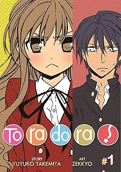

Acerca de Web

Aqui encontraras informacion sobre anime

Volumen N.1
Este volumen recoge los episodios Aria en un cielo sin estrellas, donde se cuentan los orígenes de la leyenda del espadachín negro, y Rondó de la espada efímera, la triste historia de un joven herrero que tiene como trasfondo la batalla contra el boss del segundo piso.
Precio:$210

Volumen N.1
Los hombres y mujeres jóvenes de los ochenta y seis son obligados por el gobierno de la República a librar su guerra contra el ejército de drones autónomos avanzados del Imperio, la Legión, pilotando "drones" improvisados conocidos como Juggernauts con el fin de liberar a sus familias del Sector Ochenta y Seis y recuperar su ciudadanía.
Precio: $210

Volumen N.3
Shiho tiene una triple cita con Kurumi, Tohka Yatogami y Origami Tobiichi. Shido ve por accidente a Kurumi asesinando a un grupo de hombres, luego es salvado por Mana, quien asesina a Kurumi. Mana informa que ya ha matado a Kurumi en muchas ocasiones, y que de algún modo consigue regresar a la vida.
Precio: $210

Volumen N.1
Al inicio de la serie se muestran indiferentes los dos, ya que Louise se siente decepcionada al traer un familiar que no llena sus expectativas, y Saito se encuentra confundido ya que aún no acepta la nueva realidad en la que vive. Pero poco a poco se desenvuelven sus sentimientos así como las habilidades de cada uno y el verdadero enemigo del reino en que viven. Louise y Saito terminan enamorándose y deberán confesar sus sentimientos antes de que la guerra los alcance.
Precio: $210

Tomo N.6
Kyotaro Ichikawa puede parecer el típico estudiante de secundaria, pero en su corazón sueña con el asesinato. Por ello, no es de extrañar que la persona que más desea matar nunca esté lejos de su mente: la ídolo de la clase, Anna Yamada. Leyendo a solas en la biblioteca de su querida escuela, empieza a encontrarse sin querer con Yamada, que viene a atiborrarse en secreto de sus queridos caramelos y dulces.
Precio: $210

Tomo N.5
¡Naoya tiene una relación amorosa con dos chicas encantadoras, Saki-chan y Nagisa-chan, y vive con ambas! Tanto Saki como Nagisa redoblarán sus esfuerzos para fortalecer sus lazos con él. Además, justo cuando los tres se disponen a pasar unas ricas vacaciones de verano, ¡los exámenes finales se interponen en su camino! Nagisa no ha estudiado nada, y si reprueba tres o más materias, ¡tendrá que tomas clases de reposición! Como Naoya no quiere dejarla sola, esto podría arruinar las vacaciones de todos. Para evitarlo, le pedirán ayuda a Shino, pero ¿qué pedirá ella a cambio? ¿Y de qué manera querrá Mirika acercarse esta vez a Naoya?
Precio: $159
Sword Art Online
Escapar es imposible hasta terminar el juego; un game over significaría una verdadera "muerte". Sin saber la "verdad" de la siguiente generación del Multijugador Masivo Online, 'Sword Art Online(SAO)', con 10 mil usuarios unidos juntos abriendo las cortinas para esta cruel batalla a muerte. Participando solo en SAO, el protagonista Kirito ha aceptado inmediatamente la "verdad" de este MMO. Y, en el mundo del juego, un gigante castillo flotante llamado 'Aincrad', Kirito se distinguió a si mismo como un jugador solitario. Apuntando a terminar el juego al alcanzar la planta mas alta el solo continua avanzando arriesgadamente hasta que recibe una invitación a la fuerza de una guerrera y esgrimista experta, Asuna, con la cual tendra que hacer equipo.

Temporadas 5
Date a live
Itsuka Shidou es un estudiante de instituto que, durante las vacaciones, vive en primera persona un suceso sin igual. Ante él aparece una chica con armadura, que destruye la ciudad que tiene delante. La chica responde ante el nombre de Tooka, y según la hermana de Shidou, es un espíritu os cuales causaron un terremoto espacio-temporal 30 años atrás. La hermana de Shidou revela que su verdadera identidad es la de la líder de la organización Ratatosk y le cuenta a Shidou que la única manera que tienen de salvar el mundo es hacer que Tooka se acabe enamorando de él y tengan una cita.

Temporadas 5
Zero No Tsukaima
La trama se desarrolla en un mundo donde existe la magia y existe algo de desigualdad social entre la gente que puede realizar magia y la que no, este mundo se asemeja mucho al mapa Europeo por la zona de Inglaterra, Francia, España, Alemania... en el mismo se aprecia que no existe tecnología sobresaliente más allá del siglo XIX. La gente se transporta a caballo, carrozas y en unos extraños barcos que vuelan.Hay seres mitológicos como duendes, elfos, dragones, ogros y por supuesto magos los cuales pueden manejar diferentes elementos (el fuego, el agua, el viento y la tierra). Nuestra protagonista es una maga de nombre Louise Françoise Le Blanc de La Vallière, también llamada por sus compañeros en la academia de magia "Louise la Cero", debido a que ella no es capaz de realizar algún hechizo sin que pase algo.

Temporadas 4
86 Eighty Six
La historia se sitúa en un entorno bélico el cual es protagonizado por una feroz batalla entre dos bandos, el imperio y la república. Ambos bandos cuentan con lideres altamente capacitados los cuales tendrán que idear el mejor de los planes para derrotar a su enemigo.

Temporadas 2
Boku no Kokoro no Yabai Yatsu
Kyotaro Ichikawa puede parecer el típico estudiante de secundaria, pero en su corazón sueña con el asesinato. Por ello, no es de extrañar que la persona que más desea matar nunca esté lejos de su mente: la ídolo de la clase, Anna Yamada. Leyendo a solas en la biblioteca de su querida escuela, empieza a encontrarse sin querer con Yamada, que viene a atiborrarse en secreto de sus queridos caramelos y dulces. A través de sus interacciones, Ichikawa descubre lo tonta que es Yamada, y no puede evitar apoyarla desde la barrera. Mientras tanto, la propia Yamada no puede evitar burlarse implacablemente de Ichikawa debido a sus reacciones atolondradas. Gracias a una serie de interacciones cotidianas muy conmovedoras, el vínculo distante entre ambos se convierte en algo más que simples conocidos de biblioteca. Tal vez, con el tiempo, Ichikawa llegue a darse cuenta de que sus deseos asesinos se han convertido en algo totalmente distinto.
Temporadas 2
Kanojo mo Kanojo
Después de albergar un amor no correspondido por varios años, Naoya Mukai finalmente obtiene una cita con su amiga de la infancia, Saki Saki. Sin embargo, justo cuando intenta comprometerse con esta relación, recibe una abrupta confesión por parte de Nagisa Minase. Al principio, Naoya intenta rechazarla pero pronto se ve abrumado por los sentimientos de no querer herirla. Tratando de evitar traicionar la confianza de su novia en él, Naoya piensa en una “solución” para hacer felices a ambas: salir con las dos. Naturalmente, Saki rechaza la idea, pero a través de la persistencia de Naoya y Nagisa, termina aceptando. Con esto, comienza un romance de tres integrantes entre Naoya, su novia y su otra novia, que de entrada ya tienen una relación que se desvía de la norma social.

Temporadas 2
| Tabla | Imagen | Novelan ligera de Hidan No aria |  |
Manga de Sword Art Online Progressive |  |
Manga de Toradora |  | Novela Ligera de Shagugan No Shana |  |
Novela ligera de Sword Art Online ALICIZATION |  |
Manga de Shingeki No Kyojin | Yofukashi no Uta | Sono Bisque Doll wa Koi wo Suru |  |
|---|